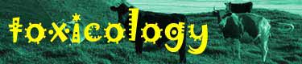

Home
Diagnosis
Treatment
Poisonous Plants
Inorganic poisons
Arsenic
Copper
Fluorine
Lead
Mercury
Nitrate / Nitrite
Phosphorus
Salt
Selenium
Thallium
Zinc
Pesticides
1080
Alpha Chloralose
Alpha Naphthyl Thiourea
Anticoagulant Rodenticides
Cholecalciferol
Cyanide
Molluscicides
Organochlorines
Organophospates & AChE Inhibitors
Pyrethrins
Squill
Strychnine
Zinc Phosphide
Miscellaneous poisons
Detergents, Bleaches & Disinfectants
Ethanol & Methanol
Ethylene Glycol
Fertilisers
Herbicides Acids & alkalies
Ionophores
Petroleum Products & Solvents
Wood Preservatives
Emergency Treatment
Diagnosis of poisoning
Treatment
Poisonous Plants
Inorganic Poisons
Arsenic
Copper
Fluorine
Lead
Mercury
Nitrate / Nitrite
Phosphorus
Salt
Selenium
Thallium
Zinc
Pesticides
1080
Alpha Chloralose
Alpha Naphthyl Thiourea
Anticoagulant Rodenticides
Cholecalciferol
Cyanide
Molluscicides
Organochlorines
Organophospates & AChE Inhibitors
Pyrethrins
Squill
Strychnine
Zinc Phosphide
Miscellaneous Poisons
Detergents, Bleaches & Disinfectants
Ethanol & Methanol
Ethylene Glycol
Fertilisers
Herbicides Acids & alkalies
Ionophores
Petroleum Products & Solvents
Wood Preservatives